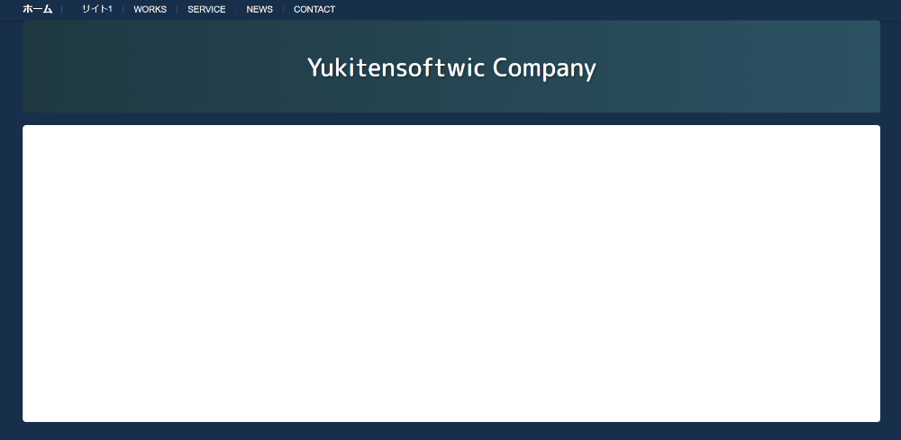

Nerus OS Next 9リリースしたよ この画像は今githubで新サイト作ってる様子 ワンちゃん移行できるかも！！
Yukitensoftwic Companyでは主にScratchでNerus OSシリーズを作成しています。
マインクラフトでは北川高速鉄道を建設、運営しています。
「今までにない 新しさを。」という経営理念を胸に頑張ってます。
Yukitensoftwic Companyでは24時間366日(閏年含めて)社員募集中です！
入社したいことを私たちに伝えればすぐに社員になれますよ！
https://scratch.mit.edu/studios/33778194
Discordも来てもいいすよ！
Nerus OS Next 9リリースしたよ この画像は今githubで新サイト作ってる様子 ワンちゃん移行できるかも！！
Nerus OS Next 9 "Nocturne" 現在Scratchにて公開中、Nerus Versionは9.0です。 https://scratch.mit.edu/projects/1205475043/ Nerus OS 8 Next -今までにない進化- 現在Scratchにて公開中、Nerus Verisonは8.5です。 https://scratch.mit.edu/projects/1207547049/ Nerus OS 8 Next NO NEWTUBE版 軽量化のためにNewTubeの機能を削除したOSです。 https://scratch.mit.edu/projects/1165640663/ Luna OS 11 画期的な「ホームバー」とともに。 現在Scratchにて公開中です。 https://scratch.mit.edu/projects/1181832857/
サポート中のOSは定期更新があります。 サポートが終了したOSであっても、ごく稀にアップデートが配信される場合があります。
Nerus OS Next 9 v9.0 Nerus OS 8 Next Ver8.4-Ver8.5 Luna OS 11
Nerus OS 8 Next (Ver8.0-8.3) Luna OS 10 Nerus OS 7 (Ver7.0-7.3) Nerus OS 6 (Ver6.0-6.6) Nerus OS 5 Nerus OS 4/Tablet Mobile Edition Nerus OS 3 Nerus OS 2 Nerus OS omg os N1/N1 Service Pack 1,2 omg os 5/5 Plus omg os 4 omg os 3 omg os 2 Home/Pro omg os Pro omg os Server omg os